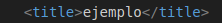
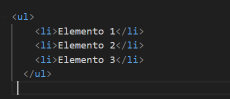

Las etiquetas de documentos en HTML son las que forman la estructura básica de un archivo HTML. Estas etiquetas organizan el contenido y definen cómo se presentará en el navegador.
<!DOCTYPE html>
Esta estiqueta declara el tipo de documento y especifica la versión de HTML que se está utilizando (HTML5 en este caso).
Es obligatoria y debe estar al principio del documento.
<html>
La etiqueta <html> en HTML se utiliza para definir el inicio y el final de un documento HTML. Es el contenedor raíz de todo el contenido de la página web. Todo lo que está dentro de esta etiqueta forma parte del documento HTML.
Sin la etiqueta <ml>, los navegadores no pueden interpretar correctamente el contenido como un documento HTML estructurado.
head
La etiqueta <head> en HTML se utiliza para contener metadatos e información sobre el documento. Estos elementos no se muestran directamente en la página web, pero son esenciales para definir cómo debe comportarse el documento y cómo será interpretado por los navegadores y motores de búsqueda.
Sin <head>, la página podría carecer de información importante que afecta tanto la experiencia del usuario como el rendimiento del sitio.
<body>
La etiqueta <body> en HTML se utiliza para contener todo el contenido visible de una página web, así como los elementos interactivos que el usuario puede ver y con los que puede interactuar en un navegador.
Esta etiqueta es importante, ya que, es el contenedor principal de todo lo que los usuarios ven e interactúan en una página y permite separar el contenido visible y funcional de la página del contenido técnico o de configuración que está en <head>.
Etiquetas de Meta Datos
Las etiquetas de metadatos en HTML se utilizan dentro del elemento <head> para proporcionar información adicional sobre el documento. Aunque no son visibles para los usuarios, son importantes para los navegadores, motores de búsqueda y otros servicios.
Una de sus característica es que no necesita una etiqueta de cierre.
<meta>
La etiqueta <meta> en HTML se utiliza para definir metadatos sobre un documento web. Los metadatos no son visibles para los usuarios, pero son esenciales para que los navegadores, motores de búsqueda y otros servicios entiendan cómo manejar o interpretar el contenido de la página.
meta charset es una etiqueta muy utilizada.
Tipos mas comunes de la etiqueta
Codificación de caracteres:Configuración para dispositivos móviles:Descripción del documento (SEO):Palabras clave (menos utilizado hoy en día):Autor del contenido:Indicaciones para motores de búsqueda (robots):
La etiqueta <meta> es fundamental en el desarrollo de páginas web porque proporciona información clave sobre el documento tanto a los navegadores como a los motores de búsqueda. Ayuda a garantizar que el contenido se interprete correctamente mediante la especificación del conjunto de caracteres, mejora la experiencia del usuario al optimizar la visualización en dispositivos móviles, y contribuye al posicionamiento SEO al incluir descripciones y palabras clave. Además, permite controlar el comportamiento del navegador, como redirecciones o almacenamiento en caché, y facilita la accesibilidad de la página en diferentes contextos y dispositivos, haciendo que sea una herramienta esencial para la funcionalidad y visibilidad de un sitio web.
<Style>
La etiqueta <style> en HTML se utiliza para definir estilos CSS directamente dentro de un documento HTML. Estos estilos afectan a la presentación de los elementos en la página, como colores, tamaños, tipografías y posicionamientos. La etiqueta <style> se coloca dentro del elemento <head> y aplica los estilos al contenido del documento.
Ventajas:
La etiqueta <style> es ideal para proyectos pequeños o rápidos, ya que permite incluir estilos CSS directamente en el documento HTML sin necesidad de crear un archivo externo. Esto simplifica el desarrollo inicial y facilita la visualización inmediata de los cambios durante la fase de pruebas o prototipos. También es útil cuando los estilos son específicos de una sola página, evitando la necesidad de gestionar un archivo CSS separado, lo cual puede ahorrar tiempo en proyectos simples o temporales.
Desventajas:
A pesar de su simplicidad, el uso de <style> tiene importantes limitaciones. En proyectos más grandes, su uso puede generar confusión y dificultar la escalabilidad, ya que mezclar contenido HTML con estilos CSS rompe la separación de responsabilidades. Esto no solo afecta la organización del código, sino también su mantenibilidad, especialmente si el equipo de desarrollo crece o el proyecto se expande. Además, al no permitir la reutilización de estilos, puede aumentar la duplicación de código y afectar negativamente al rendimiento, ya que los navegadores no pueden aprovechar la caché como lo hacen con archivos CSS externos.
¿Cuándo es mejor usar <style>
El uso de <style> es más apropiado en proyectos pequeños, prototipos o pruebas rápidas donde la prioridad es visualizar resultados inmediatos y no se requiere escalabilidad. También puede ser útil para aplicar estilos temporales o específicos a una página que no compartirán otras partes del sitio. Sin embargo, en proyectos más complejos o a largo plazo, lo mejor es utilizar archivos CSS externos, que garantizan una mayor organización, escalabilidad y un mejor rendimiento gracias a la caché del navegador.
<title>
La etiqueta <title> en HTML define el título de un documento web. Este título es crucial porque se muestra en la pestaña del navegador y se utiliza por motores de búsqueda y sistemas de marcadores para identificar y clasificar la página. Además, el contenido de esta etiqueta aparece como texto de enlace en los resultados de búsqueda, por lo que es clave para la experiencia del usuario y la optimización para motores de búsqueda (SEO).

Buenas practicas para usar <title>
Se breve pero descriptivo: Lo ideal es mantener el título entre 50 y 60 caracteres para que no se trunque en los resultados de búsqueda.
Incluye palabras clave relevantes: Asegúrate de que las palabras clave principales de la página estén presentes, pero evita el exceso de palabras clave (keyword stuffing).
Evita títulos genéricos: Un título como "Página de inicio" o "Documento HTML" no es informativo ni atractivo.
Ejemplo de mal uso:Ejemplo de buen uso
La etiqueta <title> es esencial para cualquier página web porque afecta tanto la experiencia del usuario como el rendimiento en buscadores. Un título bien redactado mejora la visibilidad, la accesibilidad y la eficacia de la página, convirtiéndose en un elemento imprescindible para un diseño web exitoso.
<base>
La etiqueta <base> en HTML se utiliza para establecer una URL base para todos los enlaces relativos en un documento. Esto significa que cualquier enlace que no tenga una URL completa utilizará la URL especificada en la etiqueta <base> como punto de referencia. La etiqueta <base> debe colocarse dentro del elemento <head> y tiene un único atributo: href, que define la URL base.
ventajas
Una de las principales ventajas de la etiqueta <base> es que facilita la gestión de enlaces relativos en un sitio web. Al definir una URL base, los enlaces relativos dentro del documento se resuelven automáticamente en relación con esta base. Esto significa que si el sitio cambia de dominio o estructura de directorios, solo necesitas modificar la URL base una vez, en lugar de actualizar cada enlace o recurso individualmente. Esto hace que el mantenimiento de sitios web grandes sea más sencillo y menos propenso a errores. Además, usando la etiqueta <base>, se pueden utilizar rutas relativas más simples sin la necesidad de especificar la URL completa, lo que puede ahorrar tiempo y esfuerzo al escribir el código.
Deventajas
A pesar de sus beneficios, la etiqueta <base> también tiene algunas desventajas. Una de las principales limitaciones es que solo se puede usar una etiqueta <base> por documento, lo que significa que solo se puede definir una URL base para todos los enlaces relativos en una página. Esto puede ser problemático si se necesita establecer diferentes URLs base para diferentes secciones de un sitio o si se utiliza un enfoque más complejo con múltiples subdirectorios. Además, los enlaces absolutos no se ven afectados por la etiqueta <base>, lo que puede generar confusión si no se entiende correctamente cómo interactúan los enlaces relativos y absolutos.
¿Por qué deberías usar la etiqueta <base>?
La etiqueta <base> es especialmente útil en proyectos de sitios web grandes o dinámicos, donde se utiliza una estructura de enlaces relativos y se prevé un cambio de dominio o estructura de carpetas en el futuro. Usarla te permite ahorrar tiempo y esfuerzo al actualizar los enlaces cuando hay cambios en la URL base, evitando la necesidad de editar cada enlace individualmente. También puede ser útil cuando se tienen muchas páginas que requieren la misma raíz de URL, como en un sitio web corporativo o de comercio electrónico. Sin embargo, es importante ser consciente de sus limitaciones, como la incompatibilidad con múltiples URLs base o la confusión que podría generar en proyectos más complejos. En resumen, usar la etiqueta <base> simplifica la gestión de enlaces relativos, pero debe ser aplicada de forma cuidadosa en función de la estructura del sitio web.
<link>
La etiqueta <link> en HTML se utiliza principalmente para vincular recursos externos, como hojas de estilo (CSS), íconos de página, fuentes y más. A diferencia de las etiquetas <a> y <img>, que se utilizan para enlaces y recursos visibles en el documento, <link> no es visible para los usuarios. Generalmente se coloca en el elemento <head> del documento y puede incluir varios atributos importantes para controlar cómo y qué recursos se vinculan.
atributos principales de la etiqueta:
rel: Especifica la relación entre el documento actual y el recurso vinculado. Este atributo es obligatorio y sus valores más comunes incluyen:
stylesheet:Se utiliza para vincular una hoja de estilo externa CSS.
icon:Para vincular un ícono de página (favicon).
preload:Para cargar de forma anticipada recursos que serán utilizados más adelante en la página.
href:Define la URL del recurso al que se vincula. Es obligatorio y debe proporcionar la ruta al archivo que se quiere enlazar.
type:Especifica el tipo de contenido del recurso. En el caso de las hojas de estilo, por ejemplo, se utiliza type="text/css", pero generalmente este atributo es opcional si el tipo se deduce del contexto.
media:ndica en qué condiciones (como el tipo de dispositivo o la resolución de pantalla) debe aplicarse el recurso vinculado, comúnmente utilizado con hojas de estilo CSS.
Algunos ejemplos son:
Ventajas
Organización y mantenimiento: Permite separar la presentación (CSS, fuentes) y otros recursos del contenido HTML, lo que hace que el código sea más limpio y fácil de mantener.
Optimización del rendimiento: Al utilizar el atributo preload, puedes anticipar la carga de recursos, mejorando la velocidad de la página y la experiencia del usuario.
Soporte para favicon: A través de <link>, puedes definir el ícono que aparecerá en la pestaña del navegador, mejorando la identidad visual del sitio.
Diseño responsivo: Al usar el atributo media, puedes aplicar diferentes hojas de estilo según el tipo de dispositivo o resolución, lo que facilita la creación de sitios web adaptables a distintos tamaños de pantalla.
Desventajas
No interactúa directamente con el contenido: A diferencia de otras etiquetas como <a> o <img>, <link> no tiene efectos visibles en la página ni en la interacción del usuario. Su función es más orientada a la optimización y la carga de recursos.
Uso exclusivo en el <head>: Aunque es posible colocar la etiqueta <link> en otros lugares de la página, su uso dentro del %lt;head> es más común y se espera en la mayoría de los casos. Si se coloca en otros lugares, puede no ser interpretada correctamente por todos los navegadores.
¿Cuándo y por qué usar la etiqueta<link>?
La etiqueta <link> debe ser utilizada siempre que necesites vincular recursos externos que no son parte del contenido visible de la página. Esto incluye hojas de estilo (CSS), íconos, fuentes web y la pre-carga de recursos. Al separar estos elementos del contenido HTML, no solo mejoras la organización del código, sino que también optimizas el rendimiento, especialmente si se utiliza preload o media. Es una herramienta indispensable para asegurar que la página cargue correctamente en diferentes dispositivos y se mantenga rápida y eficiente, lo que resulta crucial tanto para la experiencia del usuario como para el SEO.
Etiquetas de Agrupacion
En el desarrollo web, la agrupación es una técnica fundamental para organizar y estructurar el contenido de una página. En HTML, existen diferentes elementos y etiquetas que nos permiten agrupar y organizar de manera eficiente los diferentes elementos de nuestro sitio web.
<p>
La etiqueta <p> en HTML se utiliza para definir un párrafo de texto en un documento web. Es una de las etiquetas más comunes y fundamentales en HTML, ya que permite estructurar el contenido textual de manera organizada y legible. Los navegadores suelen aplicar un margen superior e inferior por defecto a los párrafos, lo que los distingue visualmente como bloques de texto separados.
Dentro de un párrafo, puedes incluir texto, enlaces, imágenes u otras etiquetas en línea (como <span> o <strong>). Ademas sirve para dividir el contenido textual en unidades coherentes, facilitando su lectura y comprensión.
Ventajas
Estructura y legibilidad: Ayuda a dividir grandes bloques de texto en fragmentos manejables, lo que mejora la legibilidad y organización del contenido.
Compatibilidad universal: Es compatible con todos los navegadores web, lo que garantiza que el contenido sea visible en cualquier dispositivo.
Flexibilidad en el diseño:Puedes aplicar estilos CSS para personalizar la apariencia de los párrafos, incluyendo márgenes, colores de texto y alineaciones.
Facilita el SEO y la accesibilidad:Usar párrafos correctamente estructurados mejora la accesibilidad para lectores de pantalla y ayuda a los motores de búsqueda a analizar el contenido del sitio.
Desventajas
Limitaciones para contenido complejo:Aunque es útil para bloques de texto simples, no es adecuada para contenido que requiere una estructura más avanzada, como tablas o listas.
Dependencia del diseño CSS:Los estilos predeterminados aplicados por los navegadores pueden no ajustarse al diseño deseado, lo que requiere personalización adicional mediante CSS.
Problemas de anidamiento incorrectoAnidar incorrectamente elementos de bloque dentro de un párrafo puede causar errores de renderizado.
¿Por qué deberías usar la etiqueta <p>?
Deberías usar la etiqueta <p> para estructurar texto en un sitio web de manera clara y lógica. Es ideal para contenido que se organiza en oraciones y párrafos, como artículos, descripciones o contenido informativo. Usarla garantiza que el texto sea fácilmente legible tanto para los usuarios como para las herramientas de análisis, como los motores de búsqueda y los lectores de pantalla. Además, permite personalizar su apariencia mediante CSS, adaptando el diseño de tu página a las necesidades específicas de tu proyecto.
<hr>
La etiqueta <hr> en HTML se utiliza para insertar una línea horizontal que separa el contenido dentro de una página web. Tradicionalmente, la etiqueta <hr> se usaba para representar un cambio temático o una división visual entre secciones de contenido. Aunque su propósito principal sigue siendo el mismo, su significado semántico puede variar según el contexto.
Una caracteristica que posee la etiqueta <hr> es que es una etiqueta vacía, lo que significa que no necesita un cierre como otras etiquetas. Su forma básica es:
<hr>, y Aunque su apariencia predeterminada es simple, puedes modificar su grosor, color, estilo y otros atributos usando CSS.
Ventajas
Separación clara del contenido:Ayuda a dividir visualmente diferentes secciones de una página, mejorando la organización y legibilidad.
SimplicidadEs fácil de implementar y no requiere contenido o atributos obligatorios.
Semántica enriquecida: En ciertos contextos, indica una pausa o cambio en el tema, lo que mejora la estructura lógica de la página.
Personalización flexible:Puedes usar CSS para personalizar completamente su apariencia y adaptarla al diseño de tu sitio web.
Desventajas
Dependencia de estilos predeterminados:Sin CSS, la apariencia de la línea puede no ajustarse al diseño deseado, ya que varía según el navegador.
Uso excesivo: Si se utiliza de manera excesiva o sin propósito claro, puede dar una apariencia desordenada al sitio.
Semántica limitada:Aunque tiene un propósito semántico, no proporciona tanta información como otros elementos más específicos, como encabezados o etiquetas <section>.
¿Por qué deberías usar la etiqueta <hr>?
Deberías usar la etiqueta <hr> cuando necesites una división clara y simple entre secciones de contenido relacionadas, como entre bloques de texto, temáticas o elementos visuales. Es útil en sitios web con mucho contenido textual para mejorar la legibilidad y la organización. También puede servir como un elemento decorativo o funcional en diseños minimalistas. Sin embargo, es importante usarla con moderación y combinarla con estilos personalizados para que encaje en la estética general del sitio.
<ul>
La etiqueta <ul> en HTML se utiliza para definir una lista desordenada. Es decir, un conjunto de elementos relacionados que no tienen un orden jerárquico o secuencial específico. Los elementos de la lista se representan comúnmente con viñetas (puntos) por defecto, aunque esto puede personalizarse con CSS.
Estructura de ul:
La etiqueta <ul> se utiliza junto con <li> (elemento de lista) para agrupar los elementos de la lista:

El navegador muestra una lista desordenada con viñetas para cada elemento.
En este ejemplo crea una lista anidada: la categoría "Frutas" contiene otra lista desordenada con elementos específicos.
Ventajas
Organización del contenido:Ayuda a estructurar elementos relacionados de manera clara y visualmente atractiva, mejorando la legibilidad.
Flexibilidad:Puede adaptarse a diversos propósitos, desde menús de navegación hasta listas de características o tareas.
Compatibilidad con navegadores: Es soportada por todos los navegadores modernos y es fácil de estilizar con CSS.
Accesibilidad: Las listas desordenadas son interpretadas correctamente por lectores de pantalla, lo que mejora la experiencia de usuarios con discapacidad visual.
Desventajas
Estilo limitado por defecto:La apariencia predeterminada (viñetas simples) puede ser básica y requerir estilos CSS para adaptarse a un diseño más complejo.
Propósito restringido: No es adecuada para listas que requieren orden o secuencia específica, como pasos o clasificaciones; para eso es mejor usar <ol>.
¿Por qué deberías usar la etiqueta <ul>?
La etiqueta <ul> es ideal cuando necesitas presentar elementos relacionados sin un orden específico. Por ejemplo, listas de características de productos, menús de navegación, categorías de un blog o puntos destacados en un informe. Es una herramienta fundamental para estructurar contenido que necesita ser claro y visualmente diferenciado, y su compatibilidad con CSS permite adaptarla a cualquier diseño o funcionalidad deseada.
<div>
a etiqueta <div> en HTML es un elemento contenedor genérico que se utiliza para agrupar otros elementos y estructurar el contenido de una página web. Su propósito principal es servir como un contenedor flexible que permite aplicar estilos CSS, organizar el diseño de una página o interactuar con JavaScript. A diferencia de etiquetas más específicas como <header> o <section>, <div> no tiene un significado semántico inherente.
La sintaxis de un contenedor <div> es simple y puede contener cualquier combinación de elementos HTML:
Ventajas
Flexibilidad:Puede contener cualquier tipo de contenido, desde texto hasta imágenes, formularios o incluso otros elementos <div>.
Facilita el diseño con CSS: Permite aplicar estilos específicos a secciones de la página mediante clases o identificadores (id).
Interacción con JavaScript:Es ideal para manipular elementos del DOM (Document Object Model) mediante scripts, como mostrar, ocultar o modificar contenido dinámicamente.
Estructuración de páginas complejas:Es útil para organizar y distribuir contenido en una página con diseños avanzados como cuadrículas o sistemas de columnas.
Desventajas
Falta de semántica: <div> no tiene un significado específico, lo que puede dificultar la accesibilidad y el SEO si se abusa de él en lugar de usar etiquetas semánticas como <header>, <main> o <section>.
Riesgo de sobreuso: Usar demasiados <div> innecesarios, también conocido como "divitis", puede hacer que el código sea más complicado de entender y mantener.
No aporta contexto: Los lectores de pantalla no reciben información sobre el propósito de un <div>, lo que puede dificultar la navegación para personas con discapacidades.
¿Por qué deberías usar la etiqueta <div>?
Deberías usar la etiqueta <div> cuando necesites un contenedor genérico para agrupar elementos, especialmente si planeas aplicar estilos o scripts personalizados. Es útil en estructuras de diseño complejo, como dividir una página en columnas o secciones que no requieren un propósito semántico específico. Sin embargo, siempre que sea posible, opta por etiquetas semánticas para mejorar la accesibilidad y el SEO de tu página. <div> sigue siendo indispensable en proyectos dinámicos o de diseño avanzado, pero debe utilizarse de manera consciente y estratégica.
<figure>
La etiqueta <figure> en HTML se utiliza para contener contenido independiente relacionado con el documento principal, como imágenes, gráficos, tablas o fragmentos de código, que suelen ir acompañados de una descripción o título en la etiqueta <figcaption>. Es un elemento semántico que mejora la organización del contenido y su accesibilidad, proporcionando un marco lógico para ilustraciones u otros elementos visuales o informativos.
Una de sus características es que Puede contener no solo imágenes, sino también videos, gráficos, tablas u otros contenidos visuales o informativos. Un ejemplo seria:
Ventajas
Mejora de la semántica:Proporciona un significado claro de que el contenido es ilustrativo o relacionado, pero independiente, mejorando el SEO y la accesibilidad.
Organización: Agrupa imágenes, gráficos o contenido visual con descripciones, facilitando una presentación profesional y clara.
Interoperabilidad:Su uso correcto permite a lectores de pantalla interpretar y relacionar el contenido de manera efectiva, beneficiando a usuarios con discapacidades visuales.
Flexibilidad para múltiples formatos:Puede contener diversos tipos de medios, como videos, diagramas o fragmentos de código.
Desventajas
Requiere compatibilidad con <figcaption>:Aunque <figcaption> es opcional, su ausencia puede limitar el contexto para ciertos elementos dentro de <figure>.
No es ideal para contenido decorativo:Si el contenido no tiene relevancia semántica (como imágenes puramente decorativas), puede ser excesivo usar <figure>.
Uso inadecuado: Puede ser malinterpretado o utilizado innecesariamente en lugar de otras etiquetas más específicas, como <section> o <aside>.
¿Por qué deberías usar la etiqueta <figure>?
Deberías usar la etiqueta <figure> cuando necesites incluir elementos visuales o informativos que tengan relevancia contextual en el contenido, pero que no necesariamente sean parte del flujo principal. Es ideal para ilustraciones, gráficos, tablas o ejemplos con descripciones claras. Su semántica no solo mejora la organización y la experiencia del usuario, sino también la accesibilidad y la optimización para motores de búsqueda, haciendo que sea una opción profesional y funcional en cualquier proyecto web.
<figcaption>
La etiqueta <figcaption> en HTML se utiliza para proporcionar una descripción o título a un contenido agrupado dentro de un <figure>. Esta etiqueta es opcional, pero su uso es altamente recomendable cuando se necesita explicar o contextualizar el contenido, como imágenes, gráficos, videos, tablas o cualquier medio visual. Al estar diseñada para acompañar a <figure>, ayuda a mejorar la semántica y accesibilidad del documento.
La relación directa con <figure> Su propósito es proporcionar un título o descripción al contenido del <figure>.
Ventajas
Mejora de la semántica: Al agregar un título o descripción a contenido visual, hace que este sea más significativo tanto para los usuarios como para los motores de búsqueda.
Accesibilidad: Facilita la interpretación del contenido por lectores de pantalla, beneficiando a usuarios con discapacidades visuales.
Mayor claridad: Aporta contexto adicional a imágenes, gráficos o videos, ayudando a los usuarios a entender mejor el propósito del contenido.
Desventajas
Estilo básico predeterminado:Sin personalización con CSS, su apariencia puede ser muy simple y no siempre adecuada para diseños modernos.
Dependencia del contexto:Si el <figure> no es necesario o el contenido ya está explicado en el texto principal, <figcaption> puede ser redundante.
Etiquetas de Textuales
<a>
La etiqueta <a> en HTML, conocida como "ancla", se utiliza para crear enlaces (hipervínculos) que permiten a los usuarios navegar entre diferentes páginas, secciones de una misma página, descargar archivos o interactuar con otros recursos en la web. Es una de las etiquetas más fundamentales en HTML para conectar contenidos y hacer la web navegable.
"href" es el atributo más importante de <a>, define el destino del enlace. Puede ser una URL completa, un enlace interno, un archivo o un fragmento dentro de la misma página.
El texto entre las etiquetas <a> y </a> es el texto visible del enlace.
Esto es un ejemplo que redirecciona a wikipedia
Atributos mas comunes d ela etiqueta <a>:
href: Define el destino del enlace. Es el atributo más importante.
target: Especifica cómo abrir el enlace
_self: En la misma pestaña (valor predeterminado).
_blank: En una nueva pestaña o ventana.
_parent: En el marco principal (si se usa con iframes).
_top: En la ventana completa, eliminando cualquier iframe.
download: Indica que el enlace descargará un archivo en lugar de abrirlo.
rel: Define la relación entre el enlace y la página actual (por ejemplo, nofollow, noopener, noreferrer).
title: Proporciona información adicional al pasar el cursor sobre el enlace.
Ventajas
Esencial para la navegación web: Permite conectar páginas, recursos y secciones de manera efectiva.
Versatilidad: Soporta enlaces internos, externos, descargas, y más.
Desventajas
Dependencia de href:el atributo href no está bien definido, el enlace no funcionará o generará confusión.
Malas prácticas en SEO:Enlaces rotos o uso excesivo de nofollow pueden afectar negativamente al posicionamiento en motores de búsqueda.
¿Por qué deberías usar la etiqueta <a>?
Deberías usar la etiqueta <a> para optimizar tu sitio en términos de SEO y accesibilidad ; Los enlaces bien diseñados mejoran el posicionamiento y hacen que el contenido sea más comprensible para los motores de búsqueda y los usuarios.
<span>
La etiqueta <span> en HTML es un elemento en línea (inline) que se utiliza principalmente para aplicar estilos, identificar fragmentos específicos de texto o contenido, y asociar estos fragmentos con scripts o manipulaciones de JavaScript. Es una etiqueta genérica, es decir, no tiene un significado semántico propio, pero su flexibilidad la convierte en una herramienta esencial para personalizar y controlar el contenido en línea.
Por sí sola, la etiqueta <span> no tiene ningún efecto visual o funcional. Su principal utilidad surge cuando se combina con atributos como class, id, o estilos CSS, y con scripts JavaScript.
Ventajas
Flexibilidad:Es ideal para destacar o trabajar con fragmentos pequeños de contenido sin afectar el diseño general.
Soporte para JavaScript:Facilita la manipulación dinámica de partes del contenido mediante scripts.
Estilización selectiva:Permite aplicar estilos o interacciones específicas solo a partes seleccionadas del contenido.
Desventajas
Uso incorrecto:Muchas veces se usa en exceso o en situaciones donde otras etiquetas semánticas (como <em>, <strong>, o <mark>) serían más apropiadas.
Requiere estilos adicionales:Por defecto, <span> no tiene ningún impacto visual o funcional, por lo que siempre necesita CSS o JavaScript para ser útil.
¿Por qué deberías usar la etiqueta <span>?
Deberías usar <span> cuando necesitas personalizar o manipular fragmentos específicos de texto o contenido en línea y no haya una alternativa semántica mejor. Es ideal para aplicar estilos personalizados, identificar fragmentos únicos para JavaScript, y mejorar la accesibilidad con atributos como aria-label. Sin embargo, úsalo con moderación y siempre considera etiquetas semánticas cuando sean más apropiadas para el contenido que estás representando.
<sub>
La etiqueta <sub> en HTML se utiliza para definir texto que debe mostrarse como subíndice. El subíndice es un texto reducido que aparece ligeramente por debajo de la línea base del texto normal. Es muy común en contextos científicos, matemáticos y químicos, donde se utilizan fórmulas o índices.
En este caso, el "2" se mostrará como subíndice, indicando la cantidad de átomos de hidrógeno en la molécula de agua.
Ventajas
Facilidad de uso:Proporciona una forma sencilla de implementar subíndices sin necesidad de estilos CSS adicionales.
Semántica y accesibilidad:Los navegadores y lectores de pantalla reconocen que el contenido dentro de <sub> es un subíndice, lo que mejora la accesibilidad del contenido técnico o académico.
Compatibilidad universal:Es compatible con todos los navegadores y dispositivos modernos, garantizando consistencia en su presentación.
Desventajas
Uso limitado:Su aplicación está restringida a contextos específicos (notación científica, técnica, etc.).
No es interactiva:No tiene funcionalidad adicional más allá de la presentación visual.
¿Por qué deberías usar la etiqueta <sub>?
Debes usar <sub> siempre que necesites representar texto como subíndice en contextos científicos, matemáticos o técnicos, o cuando quieras mejorar la accesibilidad y semántica del contenido. Esto garantiza que el texto sea interpretado correctamente tanto por los usuarios como por las herramientas automatizadas. Sin embargo, evita usar <sub> si no es necesario o si el propósito es simplemente estilizar el texto, ya que en esos casos CSS sería más apropiado.
<sup>
La etiqueta <sup> en HTML se utiliza para definir texto que debe mostrarse como superíndice. Un superíndice es un texto más pequeño que se posiciona ligeramente por encima de la línea base del texto normal. Es ampliamente utilizado en contextos matemáticos, científicos y tipográficos, como en potencias, unidades, referencias o marcas registradas.
Ventajas
Semántica enriquecida:Los navegadores y herramientas de accesibilidad reconocen que el contenido dentro de <sup> tiene la función específica de ser un superíndice.
Compatibilidad universal:Es compatible con todos los navegadores modernos y garantiza que el contenido se muestre de manera uniforme.
Apto para diversos contextos:Facilita la representación de potencias, referencias, unidades y más.
Desventajas
Uso limitado:Su aplicación está restringida a contextos específicos (matemáticos, técnicos, tipográficos).
Dependencia del diseño predeterminado:Dependencia del diseño predeterminado: Aunque proporciona una visualización básica de superíndices, para personalización avanzada es necesario utilizar CSS.
¿Por qué deberías usar la etiqueta <sup>?
Deberías usar la etiqueta <sup> para representar superíndices en contextos semánticos claros, como potencias matemáticas (e.g.,E=mc2), referencias académicas, marcas registradas (™ o ®), y notaciones científicas (e.g., H⁺ o m³). Mejora la accesibilidad y garantiza que el contenido sea interpretado correctamente por navegadores y lectores de pantalla. Evita usarlo solo con fines estéticos, para lo cual es mejor emplear CSS.
<cite>
La etiqueta <cite> en HTML se utiliza para identificar el título de una obra creativa, como un libro, artículo, película, obra de arte, documento académico, entre otros. También se puede emplear para referenciar el autor o fuente de una cita textual o idea. Los navegadores suelen mostrar el contenido de <cite> en cursiva, aunque este estilo puede personalizarse con CSS.
Ventajas
Semántica clara:Define títulos de obras o fuentes de citas de manera específica, enriqueciendo la comprensión del contenido.
Accesibilidad:Mejora la interpretación por parte de lectores de pantalla y motores de búsqueda.
Estilización automática:Los navegadores aplican estilos predeterminados, como cursiva, para destacar el contenido de forma coherente.
Desventajas
Mal uso común:A menudo se confunde con etiquetas como <blockquote> o <q>, que tienen propósitos diferentes.
Interpretación limitada:No tiene funcionalidad más allá de su significado semántico y visualización básica.
¿Por qué deberías usar la etiqueta <cite>?
Deberías usar la etiqueta <cite> cuando quieras referenciar el título de una obra creativa, como un libro, película, canción, obra de arte, o documento académico, o para atribuir una fuente en una cita textual. Por ejemplo, al mencionar el título de un libro como Cien años de soledad o al citar una fuente como La teoría de la relatividad en un contexto académico, <cite> proporciona semántica clara y accesibilidad al contenido, permitiendo que lectores de pantalla y motores de búsqueda identifiquen correctamente su propósito. Es especialmente útil en textos literarios, científicos o periodísticos para destacar y validar referencias importantes.
Etiquetas Semanticas
<nav>
La etiqueta <nav> en HTML se utiliza para definir una sección de navegación dentro de un documento web. Su propósito es agrupar los enlaces de navegación principales, como menús, enlaces a otras páginas del sitio o secciones clave. Usar <nav> mejora la accesibilidad y la estructura del sitio, ya que los motores de búsqueda y los lectores de pantalla pueden identificar fácilmente las áreas de navegación.
Ventajas
Mejora la estructura del documento:Ayuda a agrupar los elementos de navegación y proporciona una forma clara de organizarlos.
Aumenta la accesibilidad:Los lectores de pantalla y otras tecnologías asistivas pueden identificar fácilmente las secciones de navegación, mejorando la experiencia de los usuarios con discapacidades.
Optimización para motores de búsqueda (SEO): Al usar <nav>, se señala a los motores de búsqueda las secciones de navegación importantes, ayudando a mejorar la indexación del sitio.
Desventajas
Exceso de etiquetas <nav>:Usarla en exceso en una página puede llevar a una sobrecarga semántica, ya que no se debe utilizar para cada conjunto de enlaces, sino solo para los enlaces principales de navegación.
Limitado a la navegación:No es adecuada para cualquier tipo de enlace; debe limitarse a las áreas de navegación clave.
¿Por qué deberías usar la etiqueta <nav>?
Deberías usar la etiqueta <nav> para agrupar los enlaces de navegación principales dentro de un sitio web, como menús de navegación o enlaces a secciones importantes. Esto ayuda a organizar la página de manera estructurada y mejora la accesibilidad tanto para usuarios con discapacidades como para los motores de búsqueda. También es útil cuando los enlaces en cuestión representan la navegación principal de la página o el sitio, como enlaces hacia páginas internas o secciones clave del contenido.
<section>
La etiqueta <section> en HTML se utiliza para definir secciones temáticas dentro de un documento. Estas secciones agrupan contenido relacionado que forma parte de una estructura mayor, como capítulos, grupos de artículos, o partes de un informe. Al usar <section>, se facilita la organización semántica del documento y se mejora la accesibilidad, ya que cada sección puede ser identificada y procesada de manera coherente por los motores de búsqueda, navegadores y tecnologías asistivas.
Ventajas
Mejora la organización semántica:Facilita la comprensión y estructuración del contenido, tanto para los usuarios como para los motores de búsqueda.
Mejora la accesibilidad:Al dividir el contenido en secciones claras, se ayuda a los usuarios con discapacidades visuales a navegar mejor por el contenido utilizando tecnologías asistivas.
Flexibilidad:Se puede usar para agrupar cualquier tipo de contenido relacionado, como textos, imágenes, listas, formularios, entre otros.
Desventajas
Uso inapropiado: Si se usa sin una estructura coherente, puede resultar en un exceso de etiquetas <section>, lo que podría hacer el documento innecesariamente complejo y difícil de mantener.
No para agrupaciones genéricas:Si se necesita solo agrupar contenido visual o de estilo, es mejor usar otras etiquetas como <div>. <section> debe usarse solo para agrupaciones temáticas de contenido significativo.
¿Por qué deberías usar la etiqueta <section>?
Deberías usar <section> cuando necesites dividir un documento en partes temáticamente relacionadas. Cada sección debe tener un propósito claro y agrupar contenido que esté estrechamente relacionado, como capítulos, subsecciones de un artículo o partes de una página web. Es especialmente útil en documentos largos, informes, artículos de blog o sitios web con contenido diverso y estructurado. También es útil para mejorar la accesibilidad y la organización en general, así como para optimizar el contenido para motores de búsqueda.
<article>
La etiqueta <article> en HTML se utiliza para representar contenido independiente y autónomo dentro de un documento, como un artículo en un blog, una noticia, una entrada de foro, un comentario o cualquier contenido que pueda ser distribuido de manera independiente. Esta etiqueta tiene como propósito semántico identificar partes del contenido que pueden tener sentido por sí solas, incluso fuera del contexto de la página web. El uso de <article> mejora la accesibilidad y el SEO, ya que los motores de búsqueda y los usuarios pueden comprender mejor la estructura y el propósito del contenido.
Ventajas
Semántica clara:Facilita la comprensión de la estructura del contenido, ya que define bloques de información que pueden entenderse por sí solos.
Mejora la accesibilidad:os lectores de pantalla y otras tecnologías asistivas pueden identificar el contenido como artículos independientes, lo que mejora la navegación.
Facilita el mantenimiento: Al tener contenido autónomo, los desarrolladores pueden manejar y actualizar artículos de manera independiente.
Desventajas
Uso inapropiado:No todos los contenidos deben estar dentro de un <article>. No se debe usar para contenido que no sea autónomo o independiente, como simples fragmentos de texto sin contexto claro.
Confusión con otras etiquetas:Puede confundirse con etiquetas como <section>, <div>, o <aside>, que tienen propósitos ligeramente diferentes.
¿Por qué deberías usar la etiqueta <article>?
Deberías usar la etiqueta <article> cuando el contenido que estás incluyendo puede existir independientemente, como un blog, una entrada de noticias, una publicación en un foro o un comentario. Es ideal para agrupar contenido que tiene un propósito autónomo y que puede ser entendido y distribuido por separado del resto de la página. Además, al mejorar la accesibilidad y SEO, es recomendable utilizar <article> para contenido que deba ser indexado y destacado por los motores de búsqueda.
<header>
La etiqueta <header> en HTML se utiliza para definir la cabecera o encabezado de una sección o de todo un documento. Generalmente, contiene información introductoria, como el título de la página, logotipos, enlaces de navegación y otros elementos relacionados con la identidad del sitio o la sección. Al usar <header>, se facilita la estructura semántica del documento, mejorando la accesibilidad y la navegación tanto para los usuarios como para los motores de búsqueda.
Ventajas
Optimización SEO:Los motores de búsqueda pueden identificar los elementos clave dentro del encabezado, como el título y los enlaces, lo que ayuda a mejorar la indexación del sitio.
Facilidad de mantenimiento:Al agrupar los elementos clave en una sección clara y coherente, facilita el mantenimiento y la actualización del contenido.
Semántica clara:Ayuda a organizar el contenido de manera estructurada, separando el encabezado de la información del cuerpo principal.
Desventajas
Uso inapropiado:No se debe usar <header> para agrupar contenido que no es parte del encabezado, como simplemente dividir secciones de contenido sin tener un propósito claro.
Confusión con otras etiquetas: Puede confundirse con otras etiquetas estructurales, como <section> o <div>, si no se usa correctamente. Es importante recordar que <header> debe contener solo elementos introductorios o relevantes para el encabezado de la página o sección.
¿Por qué deberías usar la etiqueta <header>?
Deberías usar la etiqueta <header> cuando necesites definir la cabecera de una página o una sección específica de tu sitio web. Esto incluye colocar títulos, logotipos, enlaces de navegación u otros elementos introductorios que son clave para la identidad y la navegación de la página. Usar <header> proporciona una estructura clara que mejora la accesibilidad y optimiza la organización del contenido.
<main>
La etiqueta <main> en HTML se utiliza para definir el contenido principal de un documento, es decir, el contenido que es directamente relevante o central para el propósito del documento. El <main> debe contener el contenido único que no se repite en otras páginas del sitio, como artículos, publicaciones, o cualquier información que forme el núcleo de la página. La finalidad de esta etiqueta es separar el contenido principal de otros elementos de la página, como encabezados, barras de navegación, pie de página, y otras secciones accesorias.
Ejemplo de una Página principal de un blog
Ventajas
Claridad en la estructura:Al usar <main>, se establece claramente qué parte del documento es el contenido más importante, lo que facilita la organización del código.
Semántica clara: Define explícitamente la sección principal del contenido, lo que mejora la comprensión de la estructura del documento.
Mejora la accesibilidad:Los usuarios de tecnologías asistivas pueden saltar fácilmente al contenido principal de la página, lo que mejora la experiencia de navegación.
Desventajas
Uso inapropiado:No debe usarse para contenido repetitivo o global, como cabeceras, pies de página, o menús de navegación. El <main> debe ser exclusivo para el contenido relevante de la página.
Compatibilidad con navegadores antiguos:Aunque la mayoría de los navegadores modernos soportan <main>, algunas versiones antiguas pueden no reconocerla correctamente, lo que podría afectar la experiencia del usuario.
¿Por qué deberías usar la etiqueta <main>?
Deberías usar la etiqueta <main> cuando quieras definir el contenido principal y único de una página. Esto incluye artículos, publicaciones, productos, o cualquier otra información que esté directamente relacionada con el propósito del documento. Es ideal para la estructura de una página, especialmente cuando quieres diferenciar claramente el contenido principal del resto de elementos estructurales como navegación, encabezados o pie de página.
<footer>
La etiqueta <footer> en HTML se utiliza para definir el pie de página de un documento o de una sección específica. Generalmente, el contenido dentro de un <footer> incluye información adicional que no es parte del cuerpo principal de la página, como derechos de autor, enlaces de contacto, enlaces a políticas de privacidad, o detalles sobre la empresa o el autor del contenido. Es una etiqueta semántica que ayuda a mejorar la accesibilidad y la organización del contenido dentro de un sitio web.
Ejemplo de pie de página en una página de inicio
Ventajas
Claridad estructural:La etiqueta <footer> ayuda a separar el contenido principal del documento de la información complementaria que se encuentra al final, lo que mejora la organización del código.
Accesibilidad:Al utilizar <footer>, las tecnologías asistivas, como lectores de pantalla, pueden identificar fácilmente la parte final de la página y mejorar la experiencia de navegación.
Facilidad de mantenimiento:Tener un <footer> bien definido permite una actualización más sencilla de los elementos de contacto, derechos de autor, y enlaces adicionales sin alterar el resto del contenido.
Desventajas
Uso inapropiado:No se debe usar <footer> para contenido que no esté relacionado con información complementaria o final. No es adecuado para contenido que forme parte del cuerpo principal o que deba estar en otras secciones del sitio.
Limitación de diseño:Aunque <footer> ayuda en la organización semántica, el diseño visual sigue dependiendo de los estilos CSS, por lo que la etiqueta por sí sola no afecta la apariencia de la página.
¿Por qué deberías usar la etiqueta <footer>?
Deberías usar la etiqueta <footer> para agrupar la información adicional que aparece al final de la página o de una sección, como derechos de autor, enlaces de contacto, políticas, enlaces a redes sociales, o cualquier otro contenido complementario que no sea parte del cuerpo principal de la página. El uso de <footer> mejora la accesibilidad, la organización del contenido y la optimización SEO.